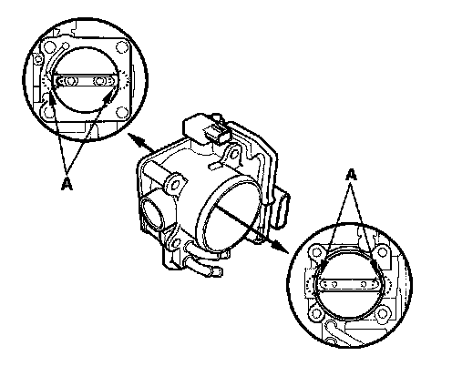

Procedures
Throttle Body CleaningCAUTION: Do not insert your fingers into the installed throttle body when you turn the ignition switch ON (II) or while the ignition switch is ON (II). If you do, you will seriously injure your fingers if the throttle valve is activated.
1. Check for damage to the air cleaner. If the air cleaner is damaged, replace it.
2. Remove the throttle body.

3. Clean off the carbon from the throttle valve and inside the throttle body with a paper towel soaked in throttle plate and induction cleaner.
NOTE:
- Remove the throttle body to clean it.
- Be careful not to pinch your fingers.
- To avoid removing the molybdenum coating, do not clean the bearing area of the throttle shaft (A).
- Do not spray throttle plate and induction cleaner directly on the throttle body.
- Use Acura genuine throttle plate and induction cleaner.
4. Install the throttle body.
5. Reset the PCM with the HDS.
6. Turn the ignition switch ON (II), and wait for 2 seconds.
7. Do the PCM idle learn procedure.